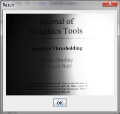

Catalano Framework, hãn?
The Catalano Framework is an image processing framework that join features from AForge.NET and Accord.NET in Java language. Using Catalano framework you'll be able to do incredible things in your pc, android or google glass. We are creating other badass features and would be awesome heard more about what you think!
Example - Bradley Local Thresholding
Original
Processed
How to use
Installing
Load the libs in your project
Installing Android project
If your are using developing with Android change the lib Catalano.Image to Catalano.Android.Image
Features
Libraries
Catalano.Image
Catalano.Fuzzy
Catalano.MachineLearning
Catalano.Math
Catalano.Neuro
Catalano.Statistics
Benchmarking
Image 7374x7374 RGB...
Median filter - window size of 5
Aforge.net - 57430ms
Catalano Framework - 5488ms
165% of difference...not too bad ;)
Upcoming
Future
Port to Google Glass®.
Port all current filters in multithreads.
Add lib for Biometrics.
Extend the whole framework.
Let's talk?
e-email: diego.catalano@live.com